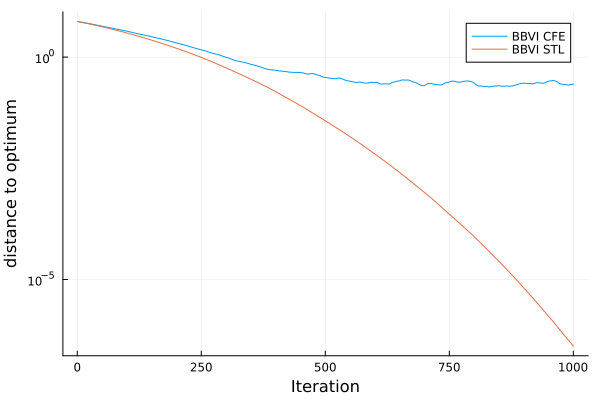
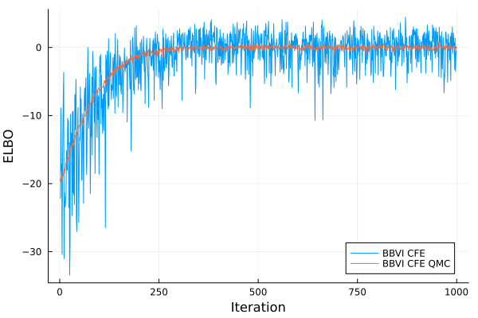
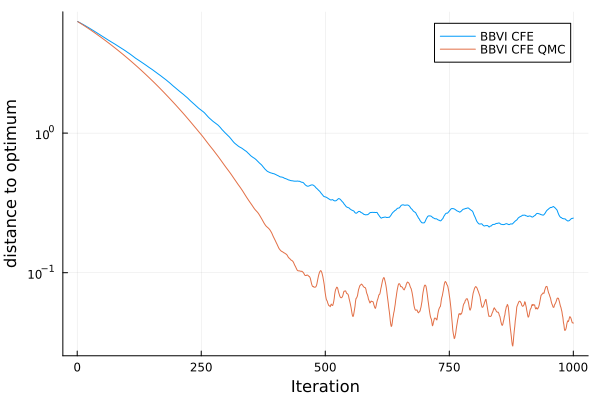

KLMinRepGradDescent
This algorithms aim to minimize the exclusive (or reverse) Kullback-Leibler (KL) divergence via stochastic gradient descent in the space of parameters. Specifically, it uses the the reparameterization gradient estimator. As a result, this algorithm is best applicable when the target log-density is differentiable and the sampling process of the variational family is differentiable. (See the methodology section for more details.) This algorithm is also commonly referred to as automatic differentiation variational inference, black-box variational inference with the reparameterization gradient, and stochastic gradient variational inference. KLMinRepGradDescent is also an alias of ADVI .
AdvancedVI.KLMinRepGradDescent — Type
KLMinRepGradDescent(adtype; entropy, optimizer, n_samples, averager, operator)KL divergence minimization by running stochastic gradient descent with the reparameterization gradient in the Euclidean space of variational parameters.
For a <:MvLocationScale variational family, IdentityOperator should be avoided for operator since optimization can result in a singular scale matrix. Instead, consider using ClipScale.
Arguments
adtype::ADTypes.AbstractADType: Automatic differentiation backend.
Keyword Arguments
entropy: Entropy gradient estimator to be used. Must be one ofClosedFormEntropy,StickingTheLandingEntropy,MonteCarloEntropy. (default:ClosedFormEntropy())optimizer::Optimisers.AbstractRule: Optimization algorithm to be used. (default:DoWG())n_samples::Int: Number of Monte Carlo samples to be used for estimating each gradient. (default:1)averager::AbstractAverager: Parameter averaging strategy.operator::AbstractOperator: Operator to be applied after each gradient descent step. (default:IdentityOperator())subsampling::Union{<:Nothing,<:AbstractSubsampling}: Data point subsampling strategy. Ifnothing, subsampling is not used. (default:nothing)
Output
q_averaged: The variational approximation formed by the averaged SGD iterates.
Callback Signature
The callback function supplied to optimize needs to have the following signature:
callback(; rng, iteration, restructure, params, averaged_params, restructure, gradient)The keyword arguments are as follows:
rng: Random number generator internally used by the algorithm.iteration: The index of the current iteration.restructure: Function that restructures the variational approximation from the variational parameters. Callingrestructure(params)reconstructs the current variational approximation.params: Current variational parameters.averaged_params: Variational parameters averaged according to the averaging strategy.gradient: The estimated (possibly stochastic) gradient.
Requirements
- The trainable parameters in the variational approximation are expected to be extractable through
Optimisers.destructure. This requires the variational approximation to be marked as a functor throughFunctors.@functor. - The variational approximation $q_{\lambda}$ implements
rand. - The target distribution and the variational approximation have the same support.
- The target
LogDensityProblems.logdensity(prob, x)must be differentiable with respect toxby the selected AD backend. - Additonal requirements on
qmay apply depending on the choice ofentropy.
Methodology
This algorithms aim to solve the problem
\[ \mathrm{minimize}_{q \in \mathcal{Q}}\quad \mathrm{KL}\left(q, \pi\right)\]
where $\mathcal{Q}$ is some family of distributions, often called the variational family, by running stochastic gradient descent in the (Euclidean) space of parameters. Since we usually only have access to the unnormalized densities of the target distribution $\pi$, we don't have direct access to the KL divergence. Instead, the ELBO maximization strategy maximizes a surrogate objective, the evidence lower bound (ELBO; [JGJS1999])
\[ \mathrm{ELBO}\left(q\right) \triangleq \mathbb{E}_{\theta \sim q} \log \pi\left(\theta\right) + \mathbb{H}\left(q\right),\]
which is equivalent to the KL up to an additive constant (the evidence).
Algorithmically, KLMinRepGradDescent iterates the step
\[ \lambda_{t+1} = \mathrm{operator}\big( \lambda_{t} + \gamma_t \widehat{\nabla_{\lambda} \mathrm{ELBO}} (q_{\lambda_t}) \big) , \]
where $\widehat{\nabla \mathrm{ELBO}}(q_{\lambda})$ is the reparameterization gradient estimate[HC1983][G1991][R1992][P1996] of the ELBO gradient and $\mathrm{operator}$ is an optional operator (e.g. projections, identity mapping).
The reparameterization gradient, also known as the push-in gradient or the pathwise gradient, was introduced to VI in [TL2014][RMW2014][KW2014]. For the variational family $\mathcal{Q} = \{q_{\lambda} \mid \lambda \in \Lambda\}$, suppose the process of sampling from $q_{\lambda}$ can be described by some differentiable reparameterization function $T_{\lambda}$ and a base distribution $\varphi$ independent of $\lambda$ such that
\[z \sim q_{\lambda} \qquad\Leftrightarrow\qquad z \stackrel{d}{=} T_{\lambda}\left(\epsilon\right);\quad \epsilon \sim \varphi \; .\]
In these cases, denoting the target log denstiy as $\log \pi$, we can effectively estimate the gradient of the ELBO by directly differentiating the stochastic estimate of the ELBO objective
\[ \widehat{\mathrm{ELBO}}\left(q_{\lambda}\right) = \frac{1}{M}\sum^M_{m=1} \log \pi\left(T_{\lambda}\left(\epsilon_m\right)\right) + \mathbb{H}\left(q_{\lambda}\right),\]
where $\epsilon_m \sim \varphi$ are Monte Carlo samples.
Entropy Gradient Estimators
For the gradient of the entropy term, we provide three choices with varying requirements. The user can select the entropy estimator by passing it as a keyword argument when constructing the algorithm object.
| Estimator | entropy(q) | logpdf(q) | Type |
|---|---|---|---|
ClosedFormEntropy | required | Deterministic | |
MonteCarloEntropy | required | Monte Carlo | |
StickingTheLandingEntropy | required | Monte Carlo with control variate |
The requirements mean that either Distributions.entropy or Distributions.logpdf need to be implemented for the choice of variational family. In general, the use of ClosedFormEntropy is recommended whenever possible. If entropy is not available, then StickingTheLandingEntropy is recommended. See the following section for more details.
The StickingTheLandingEntropy Estimator
The StickingTheLandingEntropy, or STL estimator, is a control variate approach [RWD2017].
AdvancedVI.StickingTheLandingEntropy — Type
StickingTheLandingEntropy()The "sticking the landing" entropy estimator[RWD2017].
Requirements
- The variational approximation
qimplementslogpdf. logpdf(q, η)must be differentiable by the selected AD framework.
It occasionally results in lower variance when $\pi \approx q_{\lambda}$, and higher variance when $\pi \not\approx q_{\lambda}$. The conditions for which the STL estimator results in lower variance is still an active subject for research.
The main downside of the STL estimator is that it needs to evaluate and differentiate the log density of $q_{\lambda}$, logpdf(q), in every iteration. Depending on the variational family, this might be computationally inefficient or even numerically unstable. For example, if $q_{\lambda}$ is a Gaussian with a full-rank covariance, a back-substitution must be performed at every step, making the per-iteration complexity $\mathcal{O}(d^3)$ and reducing numerical stability.
In this example, the true posterior is contained within the variational family. This setting is known as "perfect variational family specification." In this case, KLMinRepGradDescent with StickingTheLandingEntropy is the only estimator known to converge exponentially fast ("linear convergence") to the true solution.
Recall that the original ADVI objective with a closed-form entropy (CFE) is given as follows:
n_montecarlo = 16;
cfe = KLMinRepGradDescent(
AutoReverseDiff();
entropy=ClosedFormEntropy(),
optimizer=Adam(1e-2),
operator=ClipScale(),
)
nothingThe repgradelbo estimator can instead be created as follows:
stl = KLMinRepGradDescent(
AutoReverseDiff();
entropy=StickingTheLandingEntropy(),
optimizer=Adam(1e-2),
operator=ClipScale(),
)
nothing
We can see that the noise of the repgradelbo estimator becomes smaller as VI converges. However, the speed of convergence may not always be significantly different. Also, due to noise, just looking at the ELBO may not be sufficient to judge which algorithm is better. This can be made apparent if we measure convergence through the distance to the optimum:

We can see that STL kicks-in at later stages of optimization. Therefore, when STL "works", it yields a higher accuracy solution even on large stepsizes. However, whether STL works or not highly depends on the problem[KMG2024]. Furthermore, in a lot of cases, a low-accuracy solution may be sufficient.
Advanced Usage
There are two major ways to customize the behavior of KLMinRepGradDescent
- Customize the
Distributionsfunctions:rand(q),entropy(q),logpdf(q). - Customize
AdvancedVI.reparam_with_entropy.
It is generally recommended to customize rand(q), entropy(q), logpdf(q), since it will easily compose with other functionalities provided by AdvancedVI.
The most advanced way is to customize AdvancedVI.reparam_with_entropy. In particular, reparam_with_entropy is the function that invokes rand(q), entropy(q), logpdf(q). Thus, it is the most general way to override the behavior of RepGradELBO.
AdvancedVI.reparam_with_entropy — Function
reparam_with_entropy(rng, q, q_stop, n_samples, ent_est)Draw n_samples from q and compute its entropy.
Arguments
rng::Random.AbstractRNG: Random number generator.q: Variational approximation.q_stop: Same asq, but held constant during differentiation. Should only be used for computing the entropy.n_samples::Int: Number of Monte Carlo samplesent_est: The entropy estimation strategy. (Seeestimate_entropy.)
Returns
samples: Monte Carlo samples generated through reparameterization. Their support matches that of the target distribution.entropy: An estimate (or exact value) of the differential entropy ofq.
To illustrate how we can customize the rand(q) function, we will implement quasi-Monte-Carlo variational inference[BWM2018]. Consider the case where we use the MeanFieldGaussian variational family. In this case, it suffices to override its rand specialization as follows:
using QuasiMonteCarlo
using StatsFuns
qmcrng = SobolSample(; R=OwenScramble(; base=2, pad=32))
function Distributions.rand(
rng::AbstractRNG, q::MvLocationScale{<:Diagonal,D,L}, num_samples::Int
) where {L,D}
(; location, scale, dist) = q
n_dims = length(location)
scale_diag = diag(scale)
unif_samples = QuasiMonteCarlo.sample(num_samples, length(q), qmcrng)
std_samples = norminvcdf.(unif_samples)
return scale_diag .* std_samples .+ location
end
nothing(Note that this is a quick-and-dirty example, and there are more sophisticated ways to implement this.)
By plotting the ELBO, we can see the effect of quasi-Monte Carlo.  We can see that quasi-Monte Carlo results in much lower variance than naive Monte Carlo. However, similarly to the STL example, just looking at the ELBO is often insufficient to really judge performance. Instead, let's look at the distance to the global optimum:

QMC yields an additional order of magnitude in accuracy. Also, unlike STL, it ever-so slightly accelerates convergence. This is because quasi-Monte Carlo uniformly reduces variance, unlike STL, which reduces variance only near the optimum.
- JGJS1999Jordan, M. I., Ghahramani, Z., Jaakkola, T. S., & Saul, L. K. (1999). An introduction to variational methods for graphical models. Machine learning, 37, 183-233.
- HC1983Ho, Y. C., & Cao, X. (1983). Perturbation analysis and optimization of queueing networks. Journal of optimization theory and Applications, 40(4), 559-582.
- G1991Glasserman, P. (1991). Gradient estimation via perturbation analysis (Vol. 116). Springer Science & Business Media.
- R1992Rubinstein, R. Y. (1992). Sensitivity analysis of discrete event systems by the “push out” method. Annals of Operations Research, 39(1), 229-250.
- P1996Pflug, G. C. (1996). Optimization of stochastic models: the interface between simulation and optimization (Vol. 373). Springer Science & Business Media.
- TL2014Titsias, M., & Lázaro-Gredilla, M. (2014). Doubly stochastic variational Bayes for non-conjugate inference. In International Conference on Machine Learning.
- RMW2014Rezende, D. J., Mohamed, S., & Wierstra, D. (2014). Stochastic backpropagation and approximate inference in deep generative models. In International Conference on Machine Learning.
- KW2014Kingma, D. P., & Welling, M. (2014). Auto-encoding variational bayes. In International Conference on Learning Representations.
- RWD2017Roeder, G., Wu, Y., & Duvenaud, D. K. (2017). Sticking the landing: Simple, lower-variance gradient estimators for variational inference. Advances in Neural Information Processing Systems, 30.
- KMG2024Kim, K., Ma, Y., & Gardner, J. (2024). Linear Convergence of Black-Box Variational Inference: Should We Stick the Landing?. In International Conference on Artificial Intelligence and Statistics (pp. 235-243). PMLR.
- BWM2018Buchholz, A., Wenzel, F., & Mandt, S. (2018). Quasi-monte carlo variational inference. In International Conference on Machine Learning.